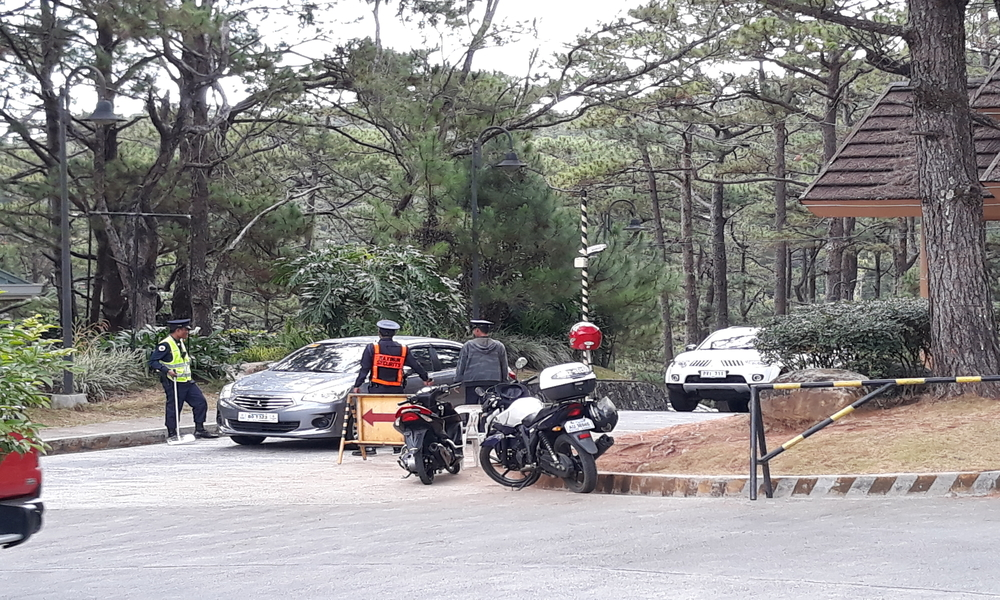
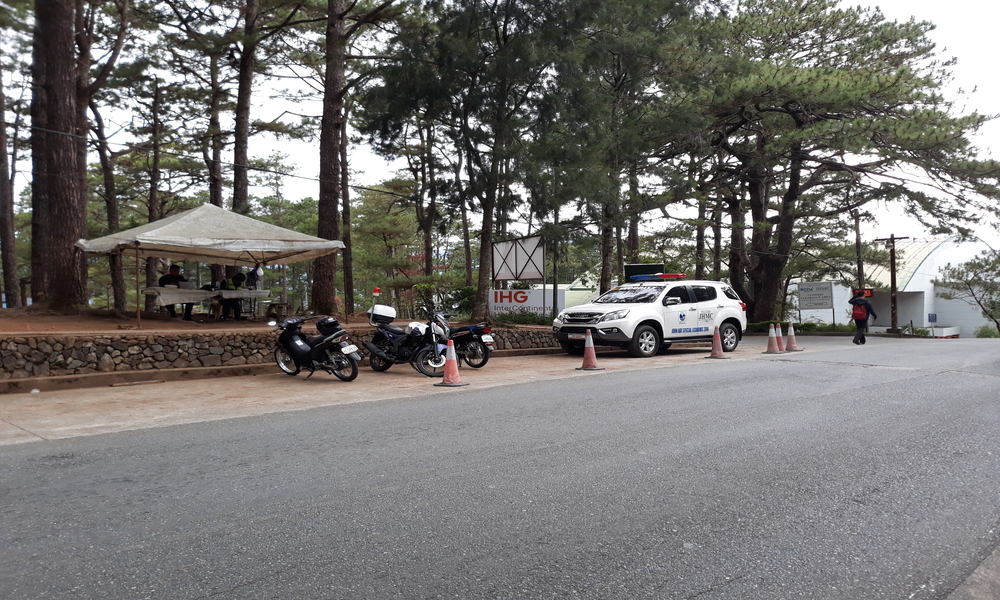
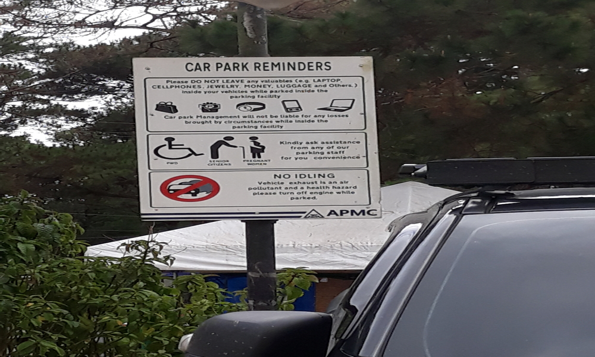
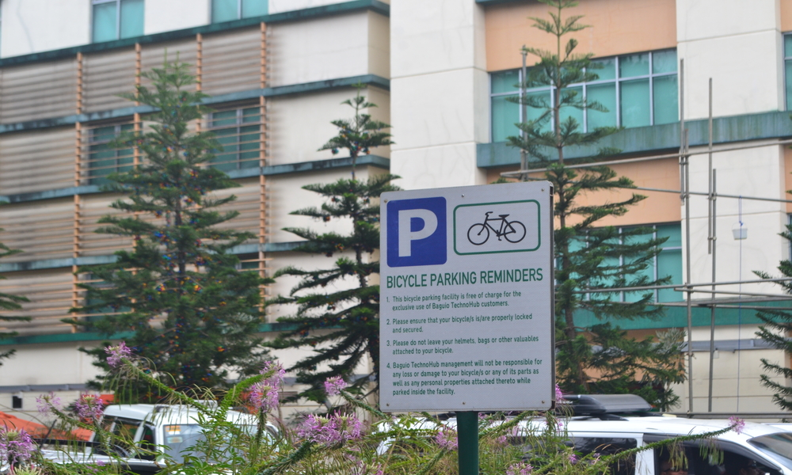

Our teams Advocacy is to remind every people to follow rules and regulations inside the Camp John Hay, this reminders must obey by the visitors to keep the Peace and Order in place.

To ensure the safety of the people inside the Camp John Hay, they have a checkpoint in every vehicle entries. The security guards will check the cars from bottom to top if there is something there that is prohibited to bring inside the Camp John Hay, also they check the passenger of the vehicle and will tell that it's all good and that the vehicle can enter the place.
To implement this the vehicle driver must:
1) Slowdown the vehicle until it reaches the entrance
2) When it reaches the entrance the security guards will check the vehicle
3) Then wait for the security guards to finish checking the vehicle and gives you the go signal

The Camp John Hay also has a Security Outpost to keep the people inside the place safe and feel safe, also it is an help desk or information booth for those peoples who are lost or wanting to find a particular place.

It is important that we follow this car park reminders for the safety of everyone and to prevent lose of things when you left your vehicle.
The Car Park Reminders:
Please do not leave any valuable things inside your vehicle while parked inside the parking facility
Kindly ask for assistance from any of our parking staff for your convenience
No Idling, vehicle exhaust is an air pollutant and a health hazard please turn off engine while parked
